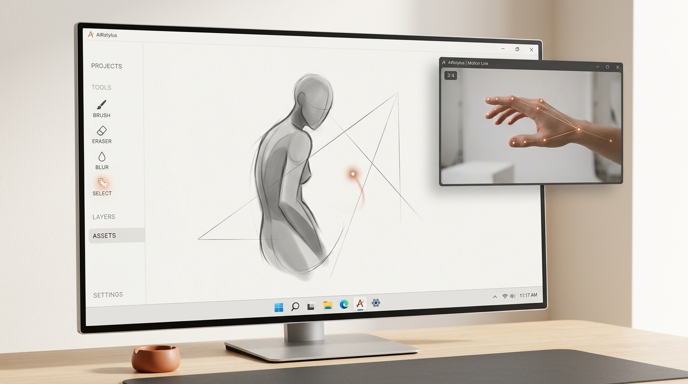
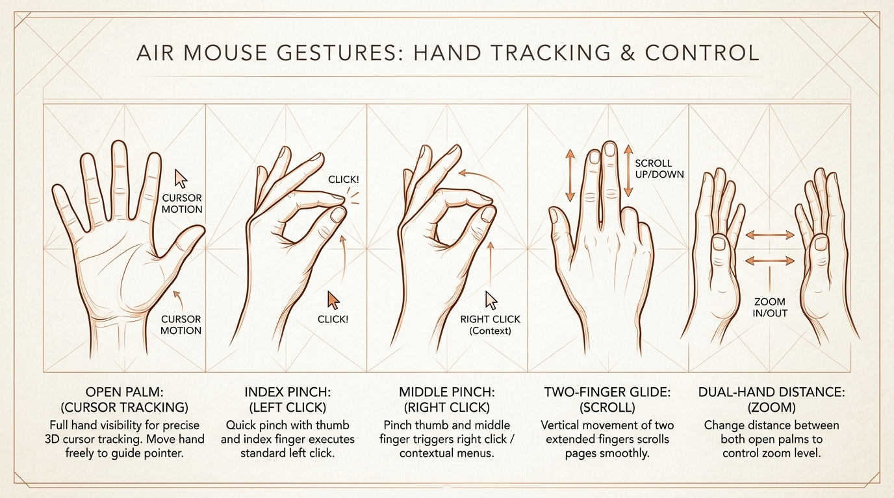

A computer mouse that lives in thin air.
AIRstylus transforms your everyday webcam into a high-precision air mouse. Control the Windows cursor with natural hand movement, pinch to click, and zoom with both hands—engineered with on-device computer vision and adaptive One-Euro filtering for immediate, jitter-free interaction.

Spatial computing without the headset.
For four decades, the desktop computer mouse has tied productivity to a flat desk pad. AIRstylus liberates cursor control into three-dimensional space, giving presenters, artists, and remote workers fluid air gestures using the hardware they already own.
Zero Calibration Burden
The built-in 4-corner calibration wizard measures your natural arm reach in 10 seconds. Wave your hand comfortably; AIRstylus bounds your physical comfort zone to your full monitor resolution.
Jitter Elimination
Human hands naturally tremble at high spatial frequencies. Our custom One-Euro adaptive filter dynamically adjusts cutoff frequencies—freezing the cursor dead-still for microscopic clicks, yet instantly freeing it for fast swipes.
Universal OS Injection
Operating via direct Windows SendInput ctypes bindings, AIRstylus works globally across all software: PowerPoint slideshows, Blender viewports, web browsers, and full-screen games.
Simulate the 21-point tracking pipeline.
Test how MediaPipe's neural model extracts spatial hand geometry in real time. Switch between gesture modes below or move your mouse inside the stage to feel spatial palm tracking.
Open Palm Traverse
Relaxed hand position. The centroid of the palm (wrist + MCP ring) directly guides the system pointer. Adaptive One-Euro filtering keeps the pointer rock-solid at rest while zero-lag tracking fast arm sweeps.
palm_centroid = mean(landmarks[0, 5, 9, 17]) smoothing: adaptive_lowpass(fc=1.2Hz)
Intuitive kinesiology, zero learning curve.
AIRstylus maps everyday natural motor habits to mouse interactions. You already know how to point, pinch, and spread your hands—now your computer understands them.

Cursor Motion
Keep your palm open or naturally relaxed. The camera tracks your palm centroid, translating air motion into fluid cursor translation across displays.
Index Pinch (Left Click)
Pinch your thumb and index fingertip together. Dual-threshold hysteresis ensures clean single-clicks without phantom double-clicking or release bounces.
Middle Pinch (Right Click)
Touch thumb and middle fingertip to summon context menus, inspect elements, or trigger alternate actions without hunting for keyboard shortcuts.
Inertial Drag & Drop
Hold a pinch for more than 350ms. The engine locks mouse down, allowing you to drag windows, rearrange files, or highlight blocks of text.
Two-Finger Glide (Scroll)
Extend index and middle fingers together and move your hand vertically. Smooth velocity accumulation provides buttery web page scrolling.
Bilateral Span (Zoom)
Bring both hands into the camera frame. Modulate the distance between both index fingers to fluidly zoom in and out of documents and maps.
Adaptive One-Euro filtering.
Raw webcam tracking is inherently noisy due to sensor grain and micro-hand tremors. Experience the difference between raw noisy coordinates and our tuned 1€ filter below.
Virtual Cursor Jitter Sandbox
Move your cursor across the boxes below to compare sensor stability.
f_c = f_{c,\min} + β • |dx/dt|
Tailored to your desk and arm reach.
Everyone sits differently. AIRstylus includes a full 4-corner interactive calibration wizard that maps your camera's field of view directly to your screen's pixel boundaries.
{}
Engineered for deterministic throughput.
AIRstylus avoids bloated electron runtimes. Written in pure Python and optimized C-extensions, compiled down to a single lightweight Windows binary.
Decoupled Camera Thread
Non-blocking video capture buffer runs on an independent worker thread at camera native refresh rate.
BlazeHand Inference
Extracts 21 3D spatial landmarks per detected hand with sub-millisecond execution times.
1€ Adaptive Filtering
Dynamically switches between velocity-dependent low-pass filtering and raw high-speed response.
Win32 SendInput
Direct kernel event injection delivers mouse events with zero lag across desktop and fullscreen games.
# app/core/smoothing.py
import math
class OneEuroFilter:
"""Adaptive low-pass filter (Casiez et al., CHI 2012).
Eliminates jitter when resting, minimal lag during rapid sweeps.
"""
def __init__(self, min_cutoff=1.0, beta=0.007, d_cutoff=1.0):
self.min_cutoff = min_cutoff
self.beta = beta
self.d_cutoff = d_cutoff
self.x_prev = None
self.dx_prev = 0.0
def filter(self, x, dt):
if self.x_prev is None:
self.x_prev = x
return x
# Filter the derivative
dx = (x - self.x_prev) / dt
a_d = self._alpha(dt, self.d_cutoff)
dx_hat = a_d * dx + (1.0 - a_d) * self.dx_prev
self.dx_prev = dx_hat
# Adapt cutoff frequency to velocity
cutoff = self.min_cutoff + self.beta * abs(dx_hat)
a = self._alpha(dt, cutoff)
x_hat = a * x + (1.0 - a) * self.x_prev
self.x_prev = x_hat
return x_hat
@staticmethod
def _alpha(dt, cutoff):
tau = 1.0 / (2.0 * math.pi * cutoff)
return 1.0 / (1.0 + tau / dt)Get AIRstylus 1.0.0
Download the self-contained Windows setup package. No Python or complex dependencies required—just install and run.
Run Setup
Double-click AIRstylus-Setup-1.0.0.exe and follow the standard Windows installation wizard.
Start Tracking
Launch AIRstylus from your Start Menu or Desktop and tap Start Tracking to activate your camera.
Calibrate & Wave
Click Calibrate, move your hand comfortably to all four corners of your intended space, and hit Save.
Frequently Asked Questions
Everything you need to know about setting up and tuning AIRstylus on your Windows workstation.